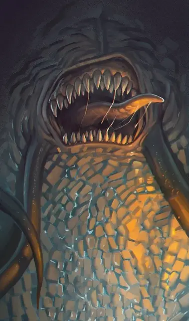

Плюющийся мимик
Spitting Mimic
Большой Монстр (Перевертыш), нейтральный

Класс Доспеха 14 (природный доспех)
Хиты 85 (10к10 + 30)
Скорость 20 футов
| мод | спас | ||
|---|---|---|---|
| СИЛ | 21 | +5 | +5 |
| ЛОВ | 12 | +1 | +1 |
| ТЕЛ | 17 | +3 | +3 |
| мод | спас | ||
|---|---|---|---|
| ИНТ | 9 | −1 | −1 |
| МДР | 15 | +2 | +2 |
| ХАР | 10 | +0 | +0 |
Навыки Скрытность +7
Иммунитет к урону кислота
Иммунитет к состояниям сбивание с ног
Чувства тёмное зрение 60 футов, пассивное Восприятие 12
Опасность 5 (1800 опыта)
Бонус мастерства +3
Особенности
Перевертыш. Мимик может действием превратиться в любой предмет, или принять свой истинный, бесформенный облик. Во всех обликах его характеристики остаются теми же самыми. Все несомое и носимое им снаряжение не превращается. Он принимает свой истинный облик, если умирает.
Клейкий (только в облике предмета). Мимик приклеивается ко всему, что его касается. Существо с размером не больше Огромного, к которому приклеился мимик, становится схваченным им (Сл высвобождения 16). Проверки характеристик для высвобождения из этого захвата совершаются с помехой.
Обманчивая внешность (только в облике предмета). Пока мимик остается без движения, он неотличим от обычного предмета.
Борец. Мимик совершает с преимуществом броски атаки по всем существам, схваченным им.
Действия
Мультиатака. Мимик совершает три атаки: дважды своими Ложноножками и один раз Укусом.
Ложноножка. Рукопашная атака оружием: +8 к попаданию, досягаемость 10 футов, одна цель. Попадание: Дробящий урон 10 (1к10 + 5). Если мимик находится в облике предмета, цель попадает под действие его особенности «Клейкий».
Укус. Рукопашная атака оружием: +8 к попаданию, досягаемость 5 футов, одна цель. Попадание: Колющий урон 10 (1к10 + 5) плюс урон кислотой 7 (2к6).
Плевок кислотой (перезарядка 5–6). Мимик плюется кислотой в одно существо, которое он может видеть в пределах 30 футов. Цель должна совершить спасбросок Ловкости Сл 14, получая 32 (9к6 + 1) урона кислотой в случае провала или половину этого урона в случае успеха.
Описание
Представленный здесь плюющийся кислотой экземпляр — особенно крупная и прожорливая особь — является результатом нетерильских экспериментов с обычными мимиками.